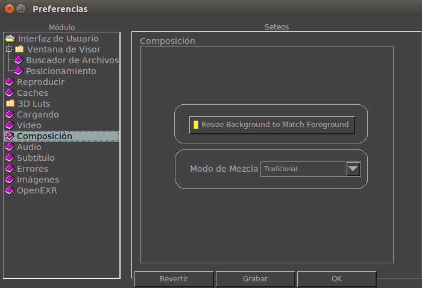

|  |
By default, the background image is scaled to fit the foreground image's size. Turning this off will leave the background image in its original size. OpenGL blend compositing mode. Traditional: SC x SA + DC x ( 1 - SA) Premult: SC + DC x ( 1 - SA ) where SC is source color, SA is source alpha, and DC is destination color. The Gamma variations go around the gamma by unpremult and premult the channels after the gamma operation. |